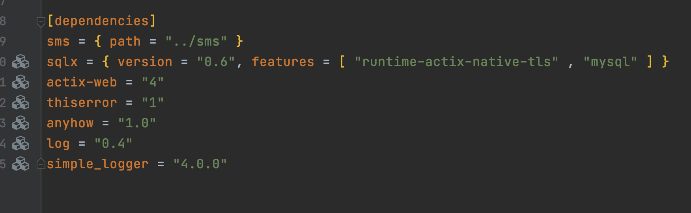

rust 包管理与工作空间
2023/01/03 21:26 下午
posted in
rust
2023/01/03 21:26 下午
posted in
rust
在编写较为复杂的项目时，合理的对代码进行组织与管理很重要。
只有按照不同的特性来组织或分隔相关功能的代码，我们才能够清晰地找到实现指定功能的代码片段，或者确定哪些地方需要修改。
Rust 提供了一系列的功能来帮助我们管理代码，包括决定哪些细节是暴露的，哪些细节是私有的，以及不同的作用域内存在哪些名称。这些功能有时被称为模块系统，他们包括
包（package）：一个用于构建、测试并分享单元包的 Cargo 功能、
单元包（crate）：一个用于生成库或可执行文件的树形模块结构
对于 Rust 而言，包是一个独立的可编译单元，它编译后会生成一个可执行文件或者一个库。
模块（module）及 use 关键字：他们被用于控制文件结构、作用域及路径的私有性。
路径（path）：一种用于命名条目的方法，这些条目包括结构体、函数和模块等。
rust 中包一般指的是 crate。
包（package），可以理解为项目、工程。
由于 Package 就是一个项目，因此它包含有独立的 Cargo.toml 文件，以及因为功能性被组织在一起的一个或多个包。一个 Package 只能包含一个库(library)类型的包，但是可以包含多个二进制可执行类型的包。
Cargo 会默认将 src/main.rs 视作一个二进制单元包的根节点而无需指定，这个二进制单元包与包拥有相同的名称。
假设包的目录中包含 src/lib.rs，Cargo 也会自动将其视作与包同名的库单元包的根节点。
main.rs 所在包是二进制单元包，lib.rs 所在包是库单元包。
cargo new my-project
cargo new my-lib --lib
库单元包（lib）只能被其他二进制单元包引用而不能独立运行。
.
├── Cargo.toml
├── Cargo.lock
├── src
│ ├── main.rs
│ ├── lib.rs
│ └── bin
│ └── main1.rs
│ └── main2.rs
├── tests
│ └── some_integration_tests.rs
├── benches
│ └── simple_bench.rs
└── examples
└── simple_example.rs
Cargo.toml 文件中的 [dependencies]

如何使用工作空间来管理代码目录结构，通过一个例子来说明一下。
在这个例子中，创建了一个 add 工作空间，这个空间中有一个二进制包 adder，有一个 lib 包 add-one，adder 依赖 add-one。
下面是操作步骤
创建一个工作空间目录，就是创建一个空的文件夹。
mkdir add
新创建的目录中添加 Cargo.toml
cd add
touch Cargo.toml
编辑 Cargo.toml
[workspace]
members = [
"adder",
"add-one"
]
在 add 目录下，创建 adder 二进制包
cargo new adder
输出
Created binary (application) `adder` project
现在的目录结构:
├── Cargo.lock
├── Cargo.toml
├── adder
│ ├── Cargo.toml
│ └── src
│ └── main.rs
└── target
创建新的 lib 包 add-one
cargo new add-one --lib
输出
Created library `add-one` project
此时的目录结构:
├── Cargo.lock
├── Cargo.toml
├── add-one
│ ├── Cargo.toml
│ └── src
│ └── lib.rs
├── adder
│ ├── Cargo.toml
│ └── src
│ └── main.rs
└── target
add-one/src/lib.rs
lib 文件中自动生成了代码，一个 add 方法，一个 test 方法
pub fn add(left: usize, right: usize) -> usize {
left + right
}
#[cfg(test)]
mod tests {
use super::*;
#[test]
fn it_works() {
let result = add(2, 2);
assert_eq!(result, 4);
}
}
让二进制包 adder 依赖 add-one 这个 lib
需要在 adder 的 Cargo.toml 文件中添加 add-one 的路径作为依赖。
[dependencies]
add-one = {path = "../add-one"}
在 adder 包中使用 add-one 中的 add 方法
adder/src/main.rs
use add_one;
fn main() {
println!("Hello, world!");
let x = add_one::add(1, 2);
assert_eq!(x,3);
println!("Hello, world!");
}
在 add 目录下构建整个工作空间
为了能够在工作空间的目录下运行二进制包，在执行 cargo run 命令时需要指定 -p 参数
cargo run -p adder
以上10个步骤就是使用工作空间的操作步骤了。
lib 包相当于工具包，一般用来实现核心功能，同时还可以给别的模块提供依赖，
二进制包相当于启动包，可以运行。